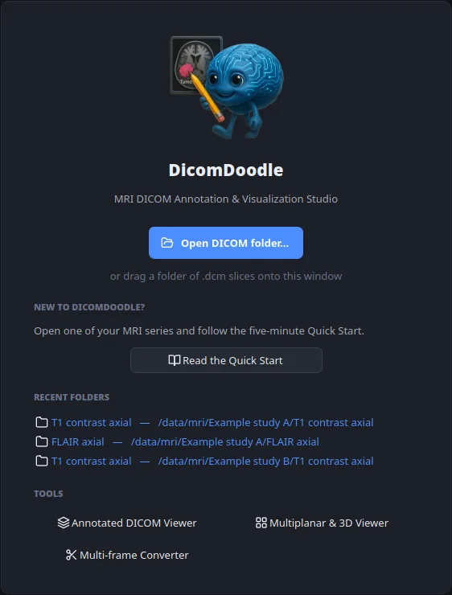

1Open
Open a series
Choose a folder of DICOM slices, or drop the folder onto the window. DicomDoodle puts the slices in order by their instance number and never changes your original files.
A whole series stored as one multi-frame file? The built-in converter turns it into standard single-slice files, ready to annotate.
- Ctrl+O open a folder
- Mouse wheel next slice
